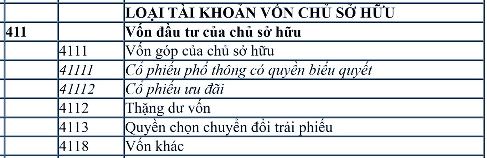

Hướng dẫn cách hạch toán Vốn đầu tư của chủ sở hữu - Tài khoản 411 áp dụng chế độ kế toán theo Thông tư 99/2025/TT-BTC mới nhất 2026, hạch toán khi nhận vốn góp của các chủ sở hữu, các cổ đông, hạch toán khi hoàn trả lại vốn góp cho chủ sở hữu.
1. Tài khoản 411 - Vốn đầu tư của chủ sở hữu
a) Tài khoản này dùng để phản ánh vốn do chủ sở hữu đầu tư hiện có và tình hình tăng, giảm vốn đầu tư của chủ sở hữu. Các công ty con phản ánh số vốn được công ty mẹ đầu tư vào tài khoản này.
Tùy theo đặc điểm hoạt động của từng đơn vị, tài khoản này có thể được sử dụng tại các đơn vị trực thuộc để phản ánh số vốn kinh doanh được cấp bởi đơn vị cấp trên (trường hợp không hạch toán vào Tài khoản 3361 - Phải trả nội bộ về vốn kinh doanh).
b) Vốn đầu tư của chủ sở hữu bao gồm:
c) Các doanh nghiệp chỉ hạch toán vào Tài khoản 411 - Vốn đầu tư của chủ sở hữu theo số vốn thực tế chủ sở hữu đã góp, không được ghi nhận theo số cam kết, số phải thu của các chủ sở hữu.
d) Doanh nghiệp phải tổ chức hạch toán chi tiết vốn đầu tư của chủ sở hữu theo từng nguồn hình thành vốn (như vốn góp của chủ sở hữu, thặng dư vốn, vốn khác, quyền chọn chuyển đổi trái phiếu (nếu có)) và theo dõi chi tiết cho từng tổ chức, từng cá nhân tham gia góp vốn.
đ) Vốn đầu tư của chủ sở hữu bị giảm khi:
e) Xác định phần vốn góp của nhà đầu tư bằng ngoại tệ
g) Trường hợp nhận vốn góp bằng tài sản phi tiền tệ, doanh nghiệp phải định giá tài sản góp vốn để phản ánh tăng vốn đầu tư của chủ sở hữu. Việc định giá tài sản góp vốn phải tuân thủ theo quy định của pháp luật doanh nghiệp (ví dụ nghiêm cấm kê khai khống vốn điều lệ, không góp đủ số vốn điều lệ như đã đăng ký; cố ý định giá tài sản góp vốn không đúng giá trị,...). Đối với việc góp vốn bằng các tài sản vô hình như thương hiệu, nhãn hiệu, tên thương mại, quyền khai thác, phát triển dự án... thì doanh nghiệp thực hiện theo quy định của pháp luật về doanh nghiệp và pháp luật về sở hữu trí tuệ.
h) Đối với công ty cổ phần, vốn góp cổ phần của các cổ đông được ghi theo giá thực tế phát hành cổ phiếu nhưng được phản ánh chi tiết theo hai chỉ tiêu riêng: vốn góp của chủ sở hữu và thặng dư vốn.
- Vốn góp của chủ sở hữu được phản ánh theo mệnh giá của cổ phiếu đồng thời được theo dõi chi tiết đối với cổ phiếu phổ thông có quyền biểu quyết và cổ phiếu ưu đãi. Doanh nghiệp phải kế toán chi tiết riêng 2 loại cổ phiếu ưu đãi:
+ Cổ phiếu ưu đãi được phân loại và trình bày là nợ phải trả trên Báo cáo tình hình tài chính của doanh nghiệp nếu cổ phiếu đó hoặc Điều lệ doanh nghiệp:
(i) Có điều khoản bắt buộc bên phát hành phải mua lại cổ phiếu ưu đãi đó tại một thời điểm đã được xác định cụ thể trong tương lai hoặc khi thỏa mãn các điều kiện cụ thể và bên phát hành không thể từ chối nghĩa vụ thanh toán (cổ phiếu ưu đãi hoàn lại). Nghĩa vụ mua lại cổ phiếu này phải được ghi rõ ngay trong hồ sơ phát hành tại thời điểm phát hành cổ phiếu; hoặc
(ii) Không có điều khoản của cổ phiếu ưu đãi hoàn lại nhưng lại có điều khoản bên phát hành bắt buộc phải trả cổ tức theo một tỷ lệ/mức cố định không phụ thuộc vào kết quả kinh doanh của bên phát hành; hoặc
(iii) Có điều khoản chuyển đổi thành cổ phiếu phổ thông nhưng phương án phát hành không quy định một tỷ lệ chuyển đổi cố định hoặc không quy định một số lượng cổ phiếu phổ thông xác định sẽ được Chuyển đổi mà dựa trên giá thị trường của cổ phiếu tại thời điểm chuyển đổi.
+ Cổ phiếu ưu đãi được phân loại là vốn chủ sở hữu nếu cổ phiếu ưu đãi đó không có bản chất của cổ phiếu ưu đãi được phân loại là nợ phải trả, khi đó doanh nghiệp sẽ trình bày là vốn chủ sở hữu trên Báo cáo tình hình tài chính.
- Thặng dư vốn phản ánh khoản chênh lệch giữa mệnh giá và giá phát hành cổ phiếu (kể cả các trường hợp tái phát hành cổ phiếu mua lại của chính mình) và có thể là thặng dư dương (nếu giá phát hành cao hơn mệnh giá) hoặc thặng dư âm (nếu giá phát hành thấp hơn mệnh giá).
i) Đối với loại hình doanh nghiệp khác (không phải công ty cổ phần): Khoản vốn thực góp của chủ sở hữu theo Điều lệ công ty sẽ được phản ánh vào chỉ tiêu vốn góp của chủ sở hữu. Phần chênh lệch giữa giá trị vốn góp thực nhận với giá trị vốn theo điều lệ của doanh nghiệp cũng được phản ánh vào chỉ tiêu thặng dư vốn.
k) Chi phí phát hành cổ phiếu (bao gồm các chi phí trực tiếp để phát hành cổ phiếu và chi phí khác liên quan đến phát hành cổ phiếu): Đối với chi phí phát hành cổ phiếu tương ứng với số cổ phiếu không phát hành được sẽ hạch toán vào chi phí hoạt động tài chính; đối với chi phí phát hành cổ phiếu tương ứng với số cổ phiếu phát hành thành công được đưa vào thặng dư vốn.
l) Nguyên tắc xác định và ghi nhận quyền chọn chuyển đổi trái phiếu thành cổ phiếu (cấu phần vốn của trái phiếu chuyển đổi):
m) Việc sử dụng vốn đầu tư của chủ sở hữu, các quỹ hoặc các nguồn thuộc vốn chủ sở hữu được thực hiện theo quy định của pháp luật.

2. Kết cấu và nội dung Tài khoản 411
|
Bên Nợ |
Bên Có |
|
Vốn đầu tư của chủ sở hữu giảm do:
|
Vốn đầu tư của chủ sở hữu tăng do:
|
| Số dư bên Có: Vốn đầu tư của chủ sở hữu hiện có của doanh nghiệp tại thời điểm kết thúc kỳ kế toán. |
Tài khoản 411 - Vốn đầu tư của chủ sở hữu, có 4 tài khoản cấp 2:
| Bên Nợ TK 4113 | Bên Có TK 4113 |
|
Kết chuyển giá trị quyền chọn cổ phiếu để ghi tăng thặng dư vốn tại thời điểm đáo hạn trái phiếu.
|
Giá trị quyền chọn cổ phiếu của trái phiếu chuyển đổi ghi nhận tại thời điểm phát hành trái phiếu.
|
|
Số dư bên Có:
Giá trị quyền chọn cổ phiếu của trái phiếu chuyển đổi tại thời điểm kết thúc kỳ kế toán.
|
3. Cách hạch toán Vốn đầu tư của chủ sở hữu một số nghiệp vụ:
|
3.1. Khi doanh nghiệp thực nhận vốn góp hoặc huy động vốn của các chủ sở hữu, ghi:
Nợ các TK 111, 112 (nếu nhận vốn góp bằng tiền)
Nợ các TK 121, 128, 228 (nếu nhận vốn góp bằng cổ phiếu, trái phiếu, các khoản đầu tư vào doanh nghiệp khác)
Nợ các TK 152, 155, 156 (nếu nhận vốn góp bằng hàng tồn kho)
Nợ các TK 211, 213, 217, 241 (nếu nhận vốn góp bằng TSCĐ, BĐSĐT)
Nợ các TK 331, 338, 341 (nếu chuyển khoản vay, mượn, nợ phải trả thành vốn góp)
Nợ TK 4112 - Thặng dư vốn (chênh lệch giữa giá trị tài sản, nợ phải trả được chuyển thành vốn góp nhỏ hơn mệnh giá cổ phần đối với công ty cổ phần hoặc giá trị phần vốn góp theo điều lệ đối với loại hình doanh nghiệp khác) (nếu có)
Có TK 4111 - Vốn góp của chủ sở hữu
Có TK 4112 - Thặng dư vốn (chênh lệch giữa giá trị tài sản, nợ phải trả được chuyển thành vốn góp lớn hơn mệnh giá cổ phần đối với công ty cổ phần hoặc giá trị phần vốn góp theo điều lệ đối với loại hình doanh nghiệp khác) (nếu có).
Xem thêm: Thủ tục góp vốn bằng Tài sản cố định
3.2. Trường hợp doanh nghiệp khác không phải là công ty cổ phần huy động vốn từ các thành viên góp vốn.
a) Khi nhận vốn thực góp theo điều lệ của doanh nghiệp, ghi:
Nợ các TK 111, 112 (giá trị vốn góp thực nhận)
Có TK 4111 - Vốn góp của chủ sở hữu.
b) Trường hợp doanh nghiệp huy động vốn từ các thành viên góp vốn có chênh lệch giữa giá trị vốn góp thực nhận với giá trị vốn theo Điều lệ của doanh nghiệp, ghi:
Nợ các TK 111, 112 (giá trị vốn góp thực nhận)
Nợ TK 4112 - Thặng dư vốn (giá trị vốn góp thực nhận nhỏ hơn giá trị vốn theo Điều lệ của doanh nghiệp) (nếu có)
Có TK 4111 - Vốn góp của chủ sở hữu (giá trị vốn theo Điều lệ của doanh nghiệp)
Có TK 4112 - Thặng dư vốn (giá trị vốn góp thực nhận lớn hơn giá trị vốn theo Điều lệ của doanh nghiệp) (nếu có).
3.3. Trường hợp công ty cổ phần phát hành cổ phiếu huy động vốn từ các thành viên, cổ đông.
a) Đối với doanh nghiệp không phải là công ty đại chúng:
Nợ các TK 111, 112 (giá phát hành)
Nợ TK 4112 - Thặng dư vốn (giá phát hành nhỏ hơn mệnh giá) (nếu có)
Có TK 4111 - Vốn góp của chủ sở hữu (mệnh giá)
Có TK 4112 - Thặng dư vốn (giá phát hành lớn hơn mệnh giá) (nếu có).
b) Đối với doanh nghiệp là công ty đại chúng:
- Khi nhận được tiền mua cổ phiếu của cổ đông ở tài khoản phong tỏa của ngân hàng, ghi:
Nợ TK 112 - Tiền gửi không kỳ hạn (tổng số tiền)
Có TK 3388 - Phải trả, phải nộp khác.
- Khi doanh nghiệp được cấp Giấy chứng nhận đăng ký doanh nghiệp, ghi:
Nợ TK 3388 - Phải trả, phải nộp khác
Nợ TK 4112 - Thặng dư vốn (giá phát hành nhỏ hơn mệnh giá) (nếu có)
Có TK 4111 - Vốn góp của chủ sở hữu (mệnh giá)
Có TK 4112 - Thặng dư vốn (giá phát hành lớn hơn mệnh giá) (nếu có).
Đồng thời doanh nghiệp phải trình bày trên thuyết minh báo cáo tài chính đối với trường hợp tại thời điểm kết thúc kỳ kế toán doanh nghiệp đang thực hiện giao dịch hoặc đã kết thúc các giao dịch phát hành cổ phiếu huy động vốn nhưng chưa nhận được Giấy chứng nhận đăng ký doanh nghiệp để ghi tăng vốn góp của chủ sở hữu trong báo cáo tài chính.
3.4. Trường hợp doanh nghiệp phát hành cổ phiếu để trả cổ tức hoặc phân phối lợi nhuận cho các chủ sở hữu hoặc dùng các nguồn thuộc vốn chủ sở hữu để tăng thêm hoặc bổ sung vốn điều lệ.
- Tại thời điểm doanh nghiệp phát hành cổ phiếu để trả cổ tức hoặc phân phối lợi nhuận cho các chủ sở hữu hoặc dùng các nguồn thuộc vốn chủ sở hữu để tăng thêm hoặc bổ sung vốn điều lệ, ghi:
Nợ các TK 414, 418, 421,...
Có TK 4118- Vốn khác.
- Khi doanh nghiệp được cấp Giấy chứng nhận đăng ký doanh nghiệp, ghi:
Nợ TK 4118 - Vốn khác
Có TK 4111 - Vốn góp của chủ sở hữu.
3.5. Tập hợp các chi phí trực tiếp liên quan đến việc phát hành cổ phiếu khi phát sinh, ghi:
Nợ TK 4112 - Thặng dư vốn
Có các TK 111, 112.
Phần chi phí phát hành cổ phiếu không thành công được ghi nhận vào chi phí tài chính, ghi:
Nợ TK 635 - Chi phí tài chính
Có TK 4112 - Thặng dư vốn.
3.6. Trường hợp công ty cổ phần phát hành cổ phiếu để đầu tư vào doanh nghiệp khác
a) Nếu giá phát hành cổ phiếu lớn hơn mệnh giá, ghi:
Nợ các TK 221, 222, 228
Có TK 4111 - Vốn góp của chủ sở hữu
Có TK 4112 - Thặng dư vốn (nếu có).
b) Nếu giá phát hành cổ phiếu nhỏ hơn mệnh giá, ghi:
Nợ các TK 221, 222, 228
Nợ TK 4112 - Thặng dư vốn (nếu có)
Có TK 4111 - Vốn góp của chủ sở hữu.
3.7. Trường hợp công ty cổ phần được phát hành cổ phiếu thường từ quỹ khen thưởng để tăng vốn đầu tư của chủ sở hữu, ghi:
Nợ TK 3531 - Quỹ khen thưởng
Nợ TK 4112 - Thặng dư vốn (giá phát hành thấp hơn mệnh giá) (nếu có)
Có TK 4111 - Vốn góp của chủ sở hữu
Có TK 4112 - Thặng dư vốn (giá phát hành lớn hơn mệnh giá) (nếu có).
3.8. Kế toán mua lại cổ phiếu do chính công ty đã phát hành để hủy bỏ theo quy định của pháp luật
- Khi doanh nghiệp đã hoàn tất các thủ tục mua lại số cổ phiếu do chính công ty đã phát hành theo quy định của pháp luật, ghi:
Nợ TK 419 - Cổ phiếu mua lại của chính mình (giá mua lại cổ phiếu)
Có các TK 111, 112.
- Trong quá trình mua lại cổ phiếu, khi phát sinh chi phí liên quan trực tiếp đến việc mua lại cổ phiếu, ghi:
Nợ TK 419 - Cổ phiếu mua lại của chính mình
Có các TK 111, 112.
- Khi doanh nghiệp hủy bỏ số cổ phiếu mua lại của chính mình theo quy định của pháp luật, ghi:
Nợ TK 4111 - Vốn góp của chủ sở hữu (mệnh giá cổ phiếu);
Nợ TK 4112 - Thặng dư vốn (nếu giá mua lại cao hơn mệnh giá) (nếu có)
Có TK 419 - Cổ phiếu mua lại của chính mình (giá thực tế mua lại cổ phiếu)
Có TK 4112 - Thặng dư vốn (nếu giá mua lại thấp hơn mệnh giá) (nếu có).
3.9. Khi nhận được tài sản hỗ trợ, tài trợ, biếu, tặng mà cơ quan có thẩm quyền yêu cầu ghi tăng vốn đầu tư của chủ sở hữu, ghi:
Nợ các TK 111, 112, 153, 211...
Có TK 411 - Vốn đầu tư của chủ sở hữu (4118).
Các trường hợp khác mà cơ quan có thẩm quyền không yêu cầu ghi tăng vốn đầu tư của chủ sở hữu thì phản ánh tài sản hỗ trợ, tài trợ, biếu, tặng vào thu nhập khác.
3.10. Khi hoàn trả vốn góp cho các chủ sở hữu bằng tiền, ghi:
Nợ TK 411 - Vốn đầu tư của chủ sở hữu (4111)
Nợ TK 4112 - Thặng dư vốn (nếu có)
Có các TK 111, 112
Có TK 4112 - Thặng dư vốn (nếu có).
3.11. Trường hợp doanh nghiệp trả lại vốn góp bằng tài sản phi tiền tệ (như hàng tồn kho, TSCĐ,...) thì việc xác định giá trị vốn góp trả lại cho chủ sở hữu căn cứ theo giá trị hợp lý của tài sản phi tiền tệ hoặc giá thỏa thuận do các bên thống nhất đánh giá, ghi:
Nợ TK 411 - Vốn đầu tư của chủ sở hữu (4111)
Nợ TK 214 - Hao mòn TSCĐ (giá trị hao mòn lũy kế)
Nợ TK 811 - Chi phí khác (nếu giá trị phần vốn góp trả lại cho chủ sở hữu được đánh giá nhỏ hơn giá trị ghi sổ của tài sản phi tiền tệ)
Có các TK 152, 155, 156, 211, 213,...(giá trị ghi sổ)
Có TK 711 - Thu nhập khác (nếu giá trị phần vốn góp trả lại cho chủ sở hữu được đánh giá lớn hơn giá trị ghi sổ của tài sản phi tiền tệ).
3.12. Kế toán quyền chọn chuyển đổi trái phiếu
- Tại thời điểm phát hành trái phiếu có quyền chuyển đổi thành cổ phiếu, doanh nghiệp xác định giá trị phần nợ gốc và quyền chọn cổ phiếu của trái phiếu chuyển đổi bằng cách chiết khấu giá trị danh nghĩa của khoản thanh toán trong tương lai về giá trị hiện tại, ghi:
Nợ các TK 111, 112 (tổng số thu từ phát hành trái phiếu chuyển đổi)
Có TK 3432 - Trái phiếu chuyển đổi (phần nợ gốc)
Có TK 4113 - Quyền chọn chuyển đổi trái phiếu (chênh lệch giữa số tiền thu được và nợ gốc trái phiếu chuyển đổi).
- Khi đáo hạn trái phiếu:
+ Trường hợp người nắm giữ trái phiếu không thực hiện quyền chọn chuyển đổi trái phiếu thành cổ phiếu, doanh nghiệp hoàn trả gốc trái phiếu, ghi:
Nợ TK 3432 - Trái phiếu chuyển đổi
Có các TK 111, 112,...
+ Trường hợp người nắm giữ trái phiếu thực hiện quyền chọn chuyển đổi trái phiếu thành cổ phiếu, doanh nghiệp ghi giảm phần nợ gốc của trái phiếu chuyển đổi và ghi tăng vốn đầu tư của chủ sở hữu, ghi:
Nợ TK 3432 - Trái phiếu chuyển đổi
Có TK 4111 - Vốn góp của chủ sở hữu (theo mệnh giá)
Có TK 4112 - Thặng dư vốn (phần chênh lệch giữa giá trị cổ phiếu phát hành thêm tính theo mệnh giá và giá trị nợ gốc trái phiếu chuyển đổi) (nếu có).
+ Đồng thời, doanh nghiệp kết chuyển giá trị quyền chọn chuyển đổi trái phiếu vào thặng dư vốn (kể cả trường hợp trái chủ không thực hiện quyền chọn), ghi:
Nợ TK 4113 - Quyền chọn chuyển đổi trái phiếu
Có TK 4112 - Thặng dư vốn.
|
Kế toán Diệu Tâm là 1 địa chỉ học kế toán thực tế tốt nhất tại Hà Nội: Dạy thực hành kê khai thuế, hoàn thiện sổ sách, lập Báo cáo tài chính, quyết toán thuế trực tiếp trên chứng từ thực tế
-------------------------------------------------------------